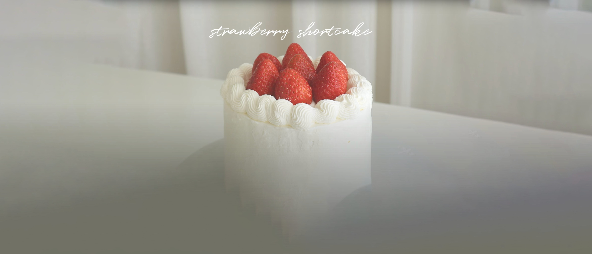

Strawberry Shortcake
My love for you is just as sweet as this cake. Made with love and care this cake is my gift to you :)
Ingredients:
Genoise
- 3 eggs
- 120g (1/2cup + 4tsp) sugar
- 120g (3/4cups + 2tbsp) pastry flour
- pinch of salt
- 5g (1tsp) vanilla extract
- 50g (3 1/2 tbsp) melted unsalted butter
Simple Syrup
- 30g (2tbsp) sugar
- 30g (2tbsp) water
Whipped Cream
- 600ml (2 1/2cups) heavy cream
- 60g (4tbsp) sugar
Strawberries
Instructions:
Genoise
- In a bowl, put eggs and sugar. Using a double boiler, whip about 8~10min until fluffy. When water is boiling, turn off the ehat and whip.
- Add the sieved pastry flour, salt, and vanilla exdtract and mix until well combined.
- In melted unslated butter, put a dollop of the batter, and mix. Put it back to the batter and mix again.
- Transfer the batter into the round pan. Tap it to get out air pockets, and bake 170C / 340F for 30~40min.
- After fully chilled, slice the cake into 3 layers.
Simple Syrup
- In a microwavable bowl, put sugar and water. Microwave and mix until all sugar are melted. Chill it in a room temp until use, or refrigerate up to 7~10 days.
Assembly
- Place one layer on a cake stand. Put the simple syrup with a brush or spoon, etc. Spread the thin layer of whipped cream evenly. Place halved strawberries on top. Spread whipped cream evenly, and place another layer of cake. Repeat with remaining layers.
- Put the whipped cream in a piping bag, about 1/3~1/2cup.
- Spread remaining frosting all over the top and side with spatula or scraper.
- Pipe the whipped cream for decoration, and put some strawberries on top.
- Refrigerate at least 30 min before slicing the cake.